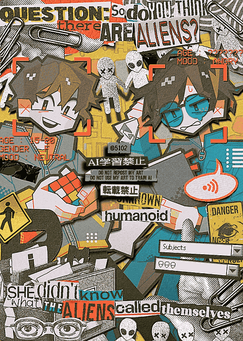

2024年7月30日納品。同じクライアントさんからの3度目のご依頼でした。いつもありがとうございます。
2回目のご依頼はコラージュと3次元の間みたいな構図になったが、今回は完全に平面にした。
使ってほしい色のリクエストも聞いてみた。これが結構、制作の上で色を決めやすくなり良かったので、次の依頼からは必ずクライアントに色の要望も訊いてみることにする。
初めて自分の体（手首）を作品に取り入れた。よく考えたら自分の体って素材の宝庫だね。
コラージュにおいてフリー素材の存在ってめちゃくちゃ助かるけど、そういうのに頼らず全部自前の素材を用意したいから、コミッションでは使わないようにしている。
自分の体なら著作権ないし自在だから、積極的に使っていこうかと思った。ご依頼ありがとうございました！
2024/07/30
 Commission
Commission